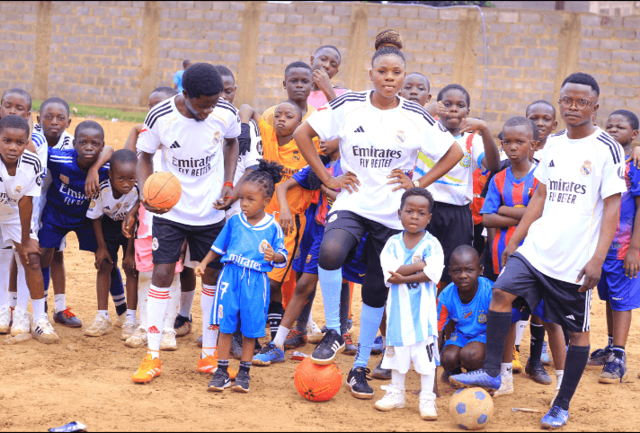
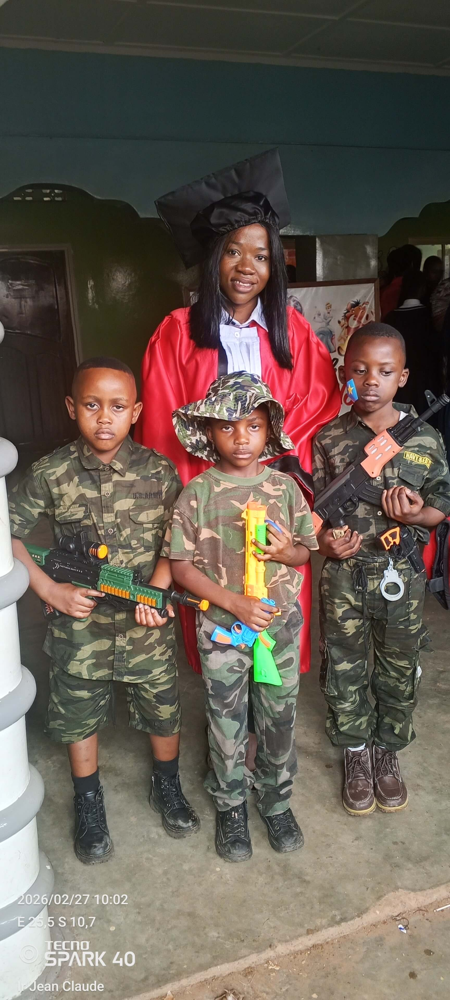
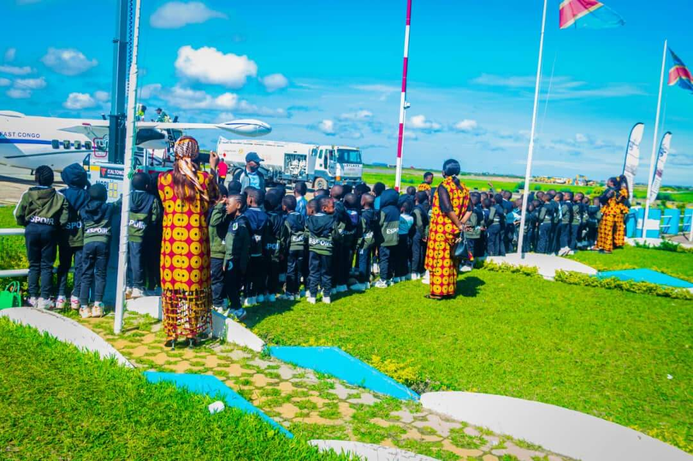
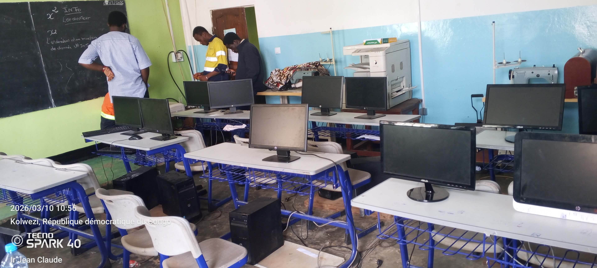

Activités scolaires et parascolaires
Au Complexe Scolaire Espoir, l'éducation ne se limite pas uniquement aux cours en classe. Nous encourageons également la participation des élèves à des diverses activités qui contribuent à leur développement physique, intellectuel, social et culturel.
Ces activités permettent aux élèves de découvrir leurs talents, de renforcer l’esprit d’équipe et de développer leur confiance en eux.

Activités sportives
Les élèves participent à plusieurs disciplines sportives telles que le football et d’autres jeux collectifs favorisant la santé et l’esprit d’équipe.

Activités culturelles
Des journées culturelles et artistiques sont organisées pour valoriser les talents des élèves en danse, musique, poésie et théâtre.

Clubs scientifiques
Les clubs scientifiques permettent aux élèves de développer leur curiosité intellectuelle et leurs compétences en sciences, technologie et innovation.

Excursions éducatives
Des visites et excursions sont organisées afin de permettre aux élèves de découvrir le monde extérieur et d'enrichir leurs connaissances culturelles et scientifiques.

Activités informatiques
Les élèves ont l'opportunité de se familiariser avec l'informatique, les outils numériques et les nouvelles technologies.

Activités environnementales
Nous sensibilisons les élèves à la protection de l’environnement à travers des activités de nettoyage, plantation d’arbres et éducation écologique.
Vidéo de nos activités scolaires
Découvrez quelques moments forts de la vie scolaire au Complexe Scolaire Espoir à travers ces vidéos présentant nos activités éducatives et culturelles.
Troisième vidéo de nos activités
Découvrez encore plus de moments forts de la vie scolaire au Complexe Scolaire Espoir à travers cette vidéo.
Vidéo de nos activités scolaires
Découvrez encore plus de moments forts de la vie scolaire au Complexe Scolaire Espoir à travers cette vidéo.
Deuxième vidéo de nos activités
Voici une autre vidéo montrant différentes activités et moments importants de la vie au Complexe Scolaire Espoir.
Deuxième vidéo de nos activités
Voici une autre vidéo montrant différentes activités et moments importants de la vie au Complexe Scolaire Espoir.